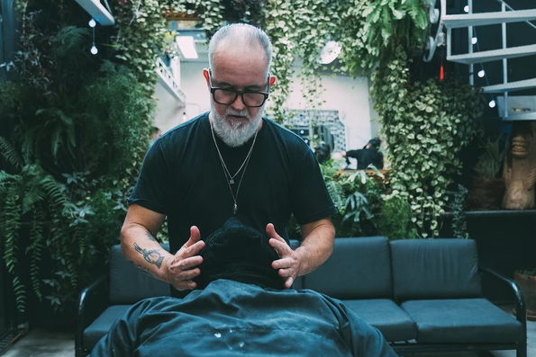
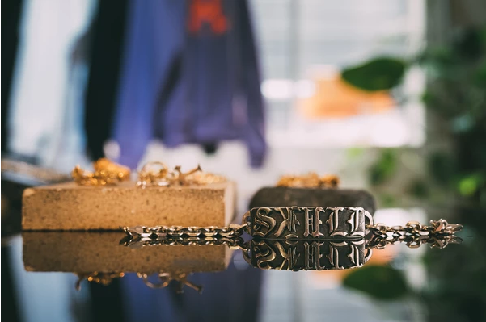

____________ Quem somos __________
A SKULL é uma marca brasileira, criada em São Paulo e com base no Brooklin, fundada em 2011.
Gabriel, formado em Artes Plásticas, tem a responsabilidade de passar seus desenhos do papel para o metal de forma natural e orgânica. Ancelmo, formado em Marketing, é o Diretor Criativo da marca.
Em seu showroom, localizado numa travessa da Berrini (Rua Quintana, 719), você tem uma experiência imersiva no lifestyle e no DNA da marca. Além do estúdio de tatuagem, onde passam diferentes artistas, também funciona uma barbearia experimental acoplada ao centro da estrutura, que conta com um atendimento exclusivo e impecável.

A SKULL acredita que suas joias são como amuletos e contam histórias. Além de serem atemporais e sem gênero, são criadas sob um processo rústico e de forma artesanal, em seu próprio ateliê com a ajuda de sua equipe de ourives.
